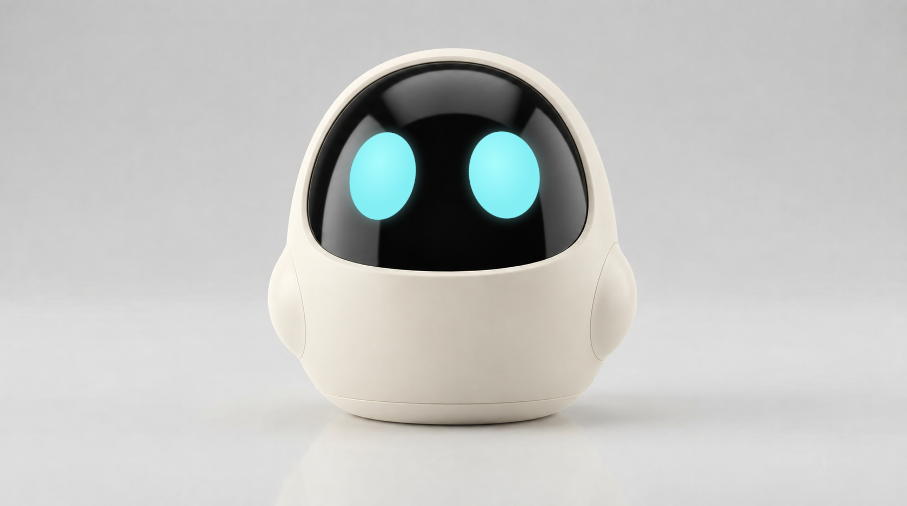
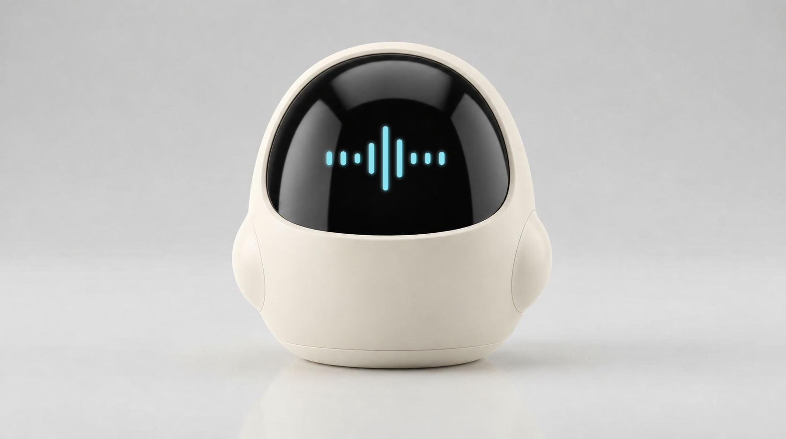
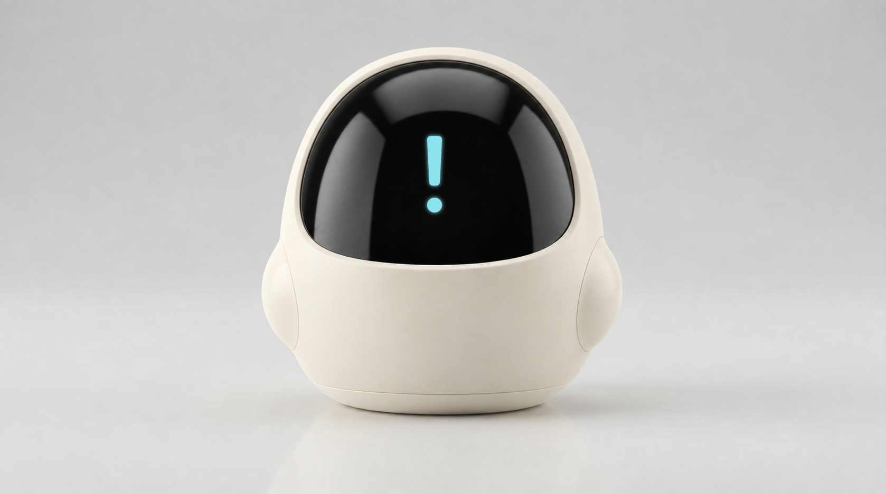
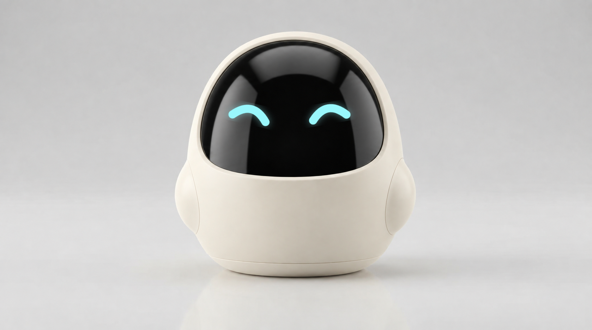
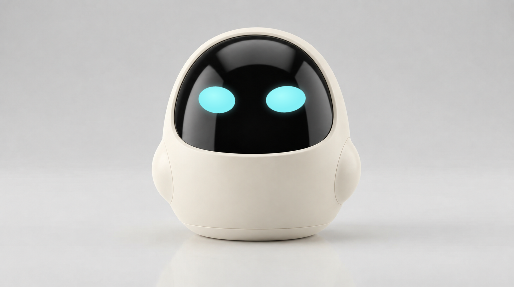

KALMA · Expressions
One fixed body, camera angle, scale and lighting. Only the eyes and communication effects change.

ReadyRelaxed cyan oval eyes
ListeningCentered cyan listening waves
ThinkingThree cyan dots inside the visor

SpeakingCentered animated cyan waveform

Needs attentionSteady cyan attention mark

EncouragementGently smiling cyan eyes

Blink · half closedFixed eye centers and spacing
Blink · closedQuick, relaxed close-and-open motion